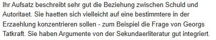
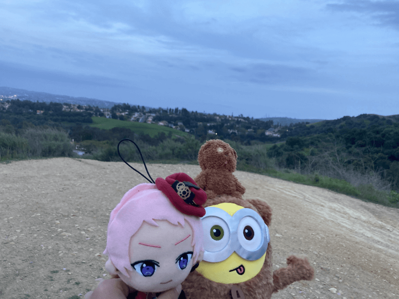
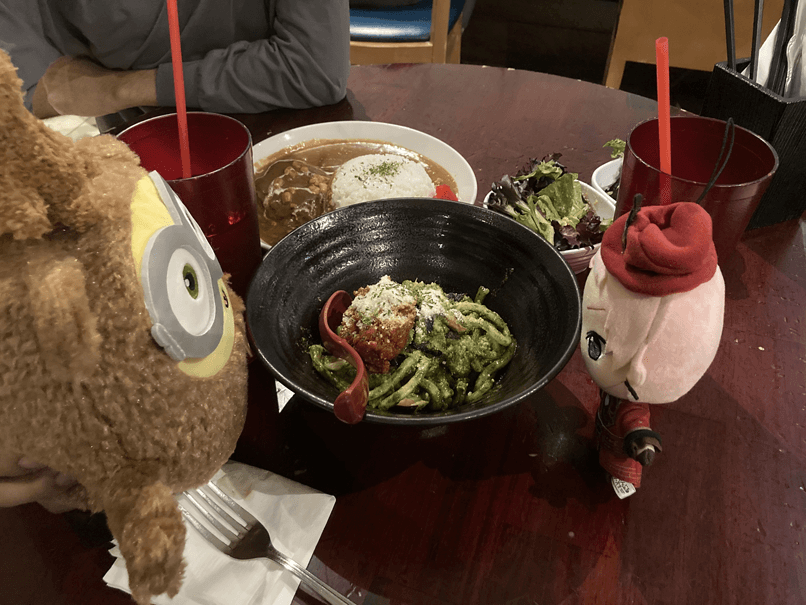
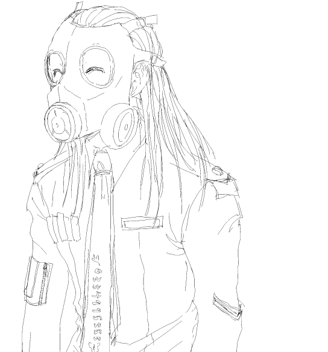

Deutsch Tagebucheintragungen
Deutsch Tagebucheintragungen 
Tagebucheintragung 4
20250621
Hast du einen schöner Sommer? Ich versuche mehr in dieser Tagebuch zu schreiben, weil meine Deutsch mehr schlimmer wird, wenn ich nicht übe... Ich habe nichts zu sagen, außer dass ich viele Spiele gespielt habe. Meine Schulevquartal ging gut, aber ich fühlte mich sehr gestresst während der lezter zwei Wochen. Dieses Quartal, nahme ich fünfe Kurse, also war ich ausgebrannt bis Quartalsende. Ich hatte einen deutschen Aufsatz zu abschließen, und ich habe es komplett versaut. Naja, ist es fertig, also ist es mir egal. Ich mochte meine Deutschkurse nicht, weil es nicht genug Erklärungen hinter die Geschichten gab, die wir lesen. Ja, wir lasen die Geschichten und Stücke, aber was sollte ich denken darüber, wenn ich keine Hintergrundinformation hat??? Es ist schwiereg die gesamten Wichtigkeit der Geschichte zu ermitteln, wenn ich habe das ganze historische Bild nicht. Als ich mein Professor fragte, sagte er: "Es ist nicht wirklich entsprechend zu wißen." .....? Was??? Ich habe mein deutscher Sprachekurs allerdings geliebt, da wir Themen wie Rassissmus in Deutschland, der Einwanderung, deutscher Rapmusik, usw. gesprochen haben. Nächstes Jahr, hoffe ich zum Studium an einer Universität nach Deutschland zu gehen, da ich nicht mehr Möglichkeiten nach meinem vierten Jahr, weil ich mein Masterstudium in meinem fünften Jahr beginne. In Herbstquartal, nehme ich einen Graduiertekurs früher als üblich bei einem meiner Lieblingsprofessoren, also freue ich mich auf das auch. Jedenfalls, habe ich viele Pläne für diesen Sommer, also fühle ich mich aufgeregt. Ich und meinen Freunden und Freundinnen versuchen das "Yaoi Game Jam" auf Itch.io zu beitreiten. LOL. Vielleicht kannst du unsere Einreichung sehen und spielen. Ich versprache meinen Professoren, dass ich auch viele Dinge lesen würde, zbs. Adorno, Nietzsche, Freud, mehr Information über Ostdeutschland, Anna Seghers, Christa Wolf, usw. Mache ich irgendetwas davon? ....... Vielleicht später. Gerade, bin ich damit beschäftigt, MMOs zu spielen. Ich habe auch ArtFight dieses Jahr beigetreten. Mein Benutzername istnaoyatoudou. Bitte greifen Sie mich an :-).
Nächster Monat, zum ersten Mal seit 2017, gehe ich auch zu einem Tagungszentrum. Geht irgendjemand zu AX? Bitte geben Sie mir Bescheid :-). Jedenfalls, ist das alles, was ich für dich habe. Eine letzte Zeichnen und eines letztes Lied:
Vatican Shadow - The House Of The Followers (JK Flesh Remix)
5 Stunde später Aktualisierung:
Es ging besser als erwartet. Ich habe keine Ahnung, wie ich nicht durchgefallen bin.
Tagebucheintragung 3
20250521
Eine sehr kleine Aufgabe über "Das Urteil." Es ist nicht eine komplizierte Erklärung, aber mein Deutsch ist nicht so gut, also... Ich habe die Berichtigungen des Professors enthalten. Vielleicht kann meiner Fehler ein bisschen nützlich für dich sein.
Zusammenfassung der Struktur
In “Das Urteil” von Franz Kafka, wird die Geschichte der dritten Person erzählt. Obwohl sie in der dritten Person erzählt wird, zeigt der Erzähler eine Vorliebe für Georg. Zum Beispiel, auf Seite 6, hat der Erzähler Mitglied mit Georgs Freund, und sagt, “Was wollte man einem solchen Manne schreiben, der sich offenbar verrannt hatte, den man bedauern, dem man aber nicht helfen konnte.” Dieser Satz zeigt eine klare Übereinstimmung mit der Perspektive von Georg, obwohl nicht von ihm sagte, es nicht von ihm kommt sondern eher der vom Erzähler. Infolgedessen ist der Erzähler nicht sachlich, sondern subjektiv. Zusätzlich, wenn wir die Auseinandersetzung zwischen Georg und seinen Vater beobachten, können wir Georgs Gedanken sehen, aber wir können seine Vaters Gedanken sehen nicht. nicht sehen. Ich meine darüber, dass diese Verschleierung von den Vaters Gedanken dient, als eine Methode Paradoxe in Georgs Wirklichkeit zu schaffen dient. Zum Beispiel, wenn Georg “Weißt du, was ich glaube? Du schonst dich nicht genug. Aber das Alter verlangt seine Rechte” sagt, denken wir, dass sein Vater krank ist (18). Aber auf Seite 23 sagt seinen Vater “Du wolltest mich zudecken, das weiß ich, mein Früchtchen, aber zugedeckt bin ich noch nicht.” Dieser Satz zeigen uns, dass für Georg seinen Vater krank scheint, aber er ist nicht krank in Realität, oder seine Krankheit ist nur eine Fassade. Wenn wir die Perspektive des Vaters hatte, vielleicht wir würde die Kenntnis haben, ob er wirklich krank war. Aber der Erzähler hat nur die Perspektive und Gedanken des Georgs, deshalb ist der Erzähler parteiisch zu ihm.
Gleichzeitig denkt Georg über seinen Vater: "Im Geschäft ist er doch ganz anders, wie er hier breit sitzt und die Arme über der Brust kreuzt.” (15). Diese Beschreibung bestreitet mit der kommender Schlussfolgerung von Georg, der dass sein Vater schlechte Gesundheit hat. Das zeigt auch, dass Georg Angst über seinen vor seinem Vater hat, weil er seinen Vaters Größe merkt.
Endlich, enthüllt sein Vater, dass er Briefe zu seinen Freund in Russland geschrieben hat, und sagt: "Ich schrieb ihm doch, weil du vergessen hast, mir das Schreibzeug wegzunehmen. Darum kommt er schon seit Jahren nicht, er weiß ja alles hundertmal besser als du selbst, deine Briefe zerknüllt er ungelesen in der linken Hand, während er in der Rechten meine Briefe zum Lesen sich vorhält!” (27). Weil wir nichts über die Erfahrungen des Vaters kennen, wissen, werden Georg und die Leser*innen überraschen, wenn er darüber schreibt. Dieser Ereignis zeigt auch, dass Georg sich schuldig fühlt, weil er sein Vaters Verdacht und Beschuldigung kontert nie. Verdacht der Beschuldigung nie kontert. Also, obwohl diese Geschichte in der dritten Person erzählt wird, haben wir nur die Gedanken des Georgs und seinen Verständnisses. Dadurch kann diese Geschichte als eine Erfahrung von der Augen des Georgs interpretieren sein, auch wenn es im ersten Person erzählt nicht.
Tagebucheintragung 2
20250329
Hallo. Das Wochenende ist endlich fertig, und ich denke, dass es ganz erfolgreich war. Der Treffpunkt der Band für "HKFY" hatte in einem Bankettsaal verlegt, aber ich hatte keine Ahnung, warum. Wir sind ein bisschen nachher gegangen, weil sie 5 Vorgruppen haben, die war zu viel für uns. Also wenn wir angekommen sind, haben wir nur 1 Vorgruppe gesehen, dann hat "HKFY" endlich gespielt. Die Lichtanlage hat während ihre Reihe warum auch immer eingeschaltet... Interessant. Die Musikanlage war so schlecht, dass ich nichts außer dem Schlagzeug gehört habe, und die Gitarren und Gesänge war nichts als Rauschen. Zum Beispiel:
Versteh mich nicht falsch. Beschissenen Geräuschquellen sind der wichtigste Faktor von Hardcore-Musiken, also könnte die Erfahrung mehr perfekt sein nicht. Moshpit(-e??? -te??? -ten??? ._.) sind üblich zu verrückt für mich, aber wenn ich ein bisschen... lebhafter... bin, werde ich gehen. Ich hatte einen klaren Kopf behalten, also habe ich diesmal gegangen nicht, weil ich Angst vor Zähne verlieren habe. Ach, und Sorgen macht sich nicht, habe ich nur 2 5-Sekunden-Videos aufgenommen. Ich hasse für mehr als 5 Sekunden aufnehmen. 1 oder 2 kurzen Augenblicke auf Video ist genug das Wesen zu fangen... Trotz allem, klangt HKFY irgendwie sehr gut. Lol. Ich würde ihnen sehen empfehlen. Alle haben sehr cool ausgesehen auch.
Am Freitag, habe ich mit einem Bekannte von mir und unseren Kuscheltiere auf einen Hügel gewandert. Der Blick von dem Gipfel scheint mehr schlimmer in diesem Bild... Es gab einen Abhang, der so steil abfallend war, waren wir grundsätzlichen am Felsen klettern. Ich habe so ziemlich gestorben, aber ich habe diese Herausforderung bewältigt... Ich will für nachstes Mal mehr starker versuchen.
Dann, haben wir in einem japanischen Restaurant gegessen, dem ich habe eine Pesto-Udon bestellt... Ich habe nach Hause gebracht, weil für mich Udon immer besser zu Hause warum auch immer ist...

Endlich, haben wir diese Matchagoldblatteiscreme bestellt, die der Höhepunkt der Nacht war (Tatsächlich, nicht mich. Meiner Bekannte). Ich würde allerdings sie erneut bestellen! Die Vanille macht den Matcha Komplimente so köstlich; Sie sind ein perfektes Gleichgewicht nach mild, erdig, und sahnig :-)))). "Maiko" ist eine kleine, aber relative populäre Kette, vielleicht habt ihr Eins in der Nähe... Versuch sie, wenn du kannst :-))) Was die "Phycocyanin-Boba" betrifft, will ich über sie nicht zu sprechen... Sie war nicht mal schlecht, nur enttäuschend; Ich war etwas mehr aufregend ertwarten, stattdessen habe ich etwas erhalten, dass nach traurige Käsekuche schmeckt. Sie war zumindest ein schönes Blau (Ich fühle mich zu träge, einer Bild zu uploaden).
Tagebucheintragung 1
20250327
Ummmm. Heute, habe ich nichts getan außer IDV mit meinen Freunden*innen zu spielen xd. Frederick Kreiburg, ich liebe diiiich :-DDD. Ich habe meinen letzten Prüfungen züruckbekommen, und ich denke, dass ich gut getan habe. Obwohl, meiner letzer Aufsatz auf Deutsch sehr schwierig war. Ich schreibe zu viele Nebensätze, also werde meinen Sätze zu kompliziert. Meiner Professor hatte gesagt: "Jeder zusätzliche Nebensatz macht den gesamten Satz komplexer und die Grammatik komplizierter. Die Wahrscheinlichkeit von Fehlern und sprachlichen Ungenauigkeiten erhöht sich." Ich könne nicht mit ihm mehr zustimmen... Seine Kurs macht viel Spaß; haben wir über mittelalterlichen deutschen Geschichten und Theaterstücke gelesen, wobei ich die Texte ohne viele Schwierigkeiten lese könnte nicht. Ich fühle mich noch zufrieden, weil ich für nur 9 Monaten mein Deutsch ein bisschen verbessert habe. Aber, verstehe ich noch immer nicht die anderen grammatikalischen Fälle...
Diese Woche, habe ich "Dr. Mabuse, der Spieler," und "Hotel Transylvania" (lol) geschaut. Ich will auch "Casablanca" bald schauen. Morgen, werde ich wandern, und versuche... "Phycocyanin Boba..." Ich habe keine Ahnung, wenn dieses Getränk gut sein werden... Wir werden "Matcha Blattgoldeiscreme" versuchen auch. Am Samstag, sehe ich "Hong Kong Fuck You" mit ein paar Freunden*innen. Ich habe nicht Hardcore-Musik lange gehört... Das letztes Mal, dass ich eine Hardcore-Band sah, war fast vor 3 Jahren. In letzter Zeit, höre ich wieder Futurepop/EBM Musik wie "Nachtmahr," "Miss Construction," "Ashbury Heights," "Das Ich," "In Strict Confidence," etc. zu, vielleicht weil meistens sie Deutsch sind xd. Ich bin überraschte derzeit über die steigende Popularität der Futurepop/EBM-Musik. Ich erinnere mich, wenn "Miss Construction" nur etwa 2.000 Hörer*innen hatte xD.
Naja, werde ich nun ein paar Lieder empfehlen, wie ich normalweise tun.
- Rotersand - Exterminate, Annihilate, Destroy
- Viki Miljković - Maris li
- Sam Hui - 滄海一聲笑 (電影《笑傲江湖》主題曲) (Ich habe dieser Lied während meine Kindheit millionenfach gehört...)
- 銀臨〈今宵〉（電視劇《明月曾照江東寒》片頭曲 (Der Lied ist eingängig und süß, aber ich habe diese Fernsehsendung geschaut nie LOL)
Wenn Sie diese Eintragung gelesen haben, danke. Hier ist ein Zeichnen von mir. Es ist mich mit meiner Avon FM-12 Gasmaske, Bat-su Krawatte, und Qutie Frash Hemdbluse.
